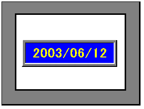

|
|
|
|
|
|
|
|
This section explains how to display the date using the Date Display tool.

Click the Data Display icon on the Graphical Objects Parts toolbar, and select Date Display from the list.
On the panel, click and draw the area where you want the Date Display, and then click again.
The Date Display Settings dialog box opens.
In the General tab, define the date display format in the Format property.
Define label settings, such as Font and Font Style, as required.
In the Color tab, set up the color properties.
Click OK. You have created a date display that displays the date in Runtime.
For more information about properties in the General, Color, and Visibility tabs, see Sections 11.2.1, General Tab, 11.2.3, Color Tab, and 11.2.4, Visibility Tab.